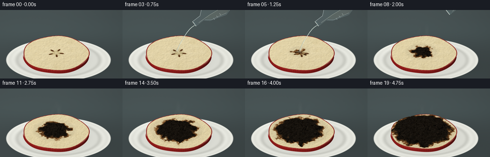
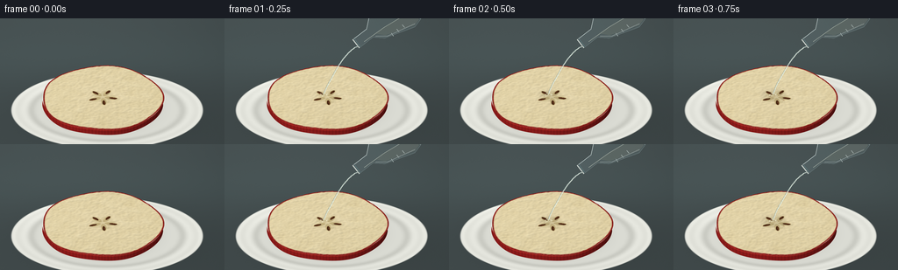

CODING AGENTS AS PIXEL WORLD MODELS
traex/GPT-6.1-Sol · phygen_152
点击播放 · 原生 RGB 像素
逐轮保存的候选
回放视频、检查图与代码变化。
每份候选均可单独播放。实际图片检查记录在下方工具轨迹中。
候选 01播放与检查图
点击播放 · 原生 RGB 像素


展开代码变化
--- 上一保存版本
+++ 本次保存版本
@@ -0,0 +1,245 @@
+from pathlib import Path
+import json
+import numpy as np
+from PIL import Image, ImageDraw, ImageFilter, ImageFont
+from scipy.ndimage import gaussian_filter, map_coordinates
+from scipy.spatial import cKDTree
+import artifact_io
+
+ROOT=Path(__file__).resolve().parent
+SPEC=json.loads((ROOT/'task_spec.json').read_text())
+W,H=SPEC['width'],SPEC['height']
+S=3
+HH,WW=H*S,W*S
+rng=np.random.default_rng(152)
+yy,xx=np.mgrid[0:HH,0:WW].astype(float)/S
+CX,CY=117.,98.
+SIN,COS=.53,.848
+
+def sm(a,b,x):
+ q=np.clip((x-a)/(b-a),0,1)
+ return q*q*(3-2*q)
+
+def blend(a,b,q): return a*(1-q[...,None])+np.asarray(b)*q[...,None]
+
+# All materials are synthesized from fixed procedural fields in object coordinates.
+N=640
+axis=np.linspace(-88,88,N)
+Y,X=np.meshgrid(axis,axis,indexing='ij')
+R=np.hypot(X,Y)
+A=np.arctan2(Y,X)
+edge=69*(1+.018*np.cos(5*A+.3)+.009*np.sin(3*A))
+noise0=rng.normal(size=(N,N))
+def noise(sigma):
+ n=gaussian_filter(noise0,sigma)
+ return n/(n.std()+1e-9)
+n1=noise(17); n2=noise(4.2); n3=noise(1.1)
+base_h=8.4+1.1*(1-(R/70)**2)+.12*n2
+# Radial fruit fibers and minute juice-filled pores.
+fiber=np.sin(A*144+.65*n2+R*.055)*.35 + np.sin(R*2.9+n2*.2)*.2
+cream=np.zeros((N,N,3))+[239,223,177]
+cream+=(n1*.95+n2*.5+n3*.8+fiber)[...,None]*np.array([1.2,1.45,1.9])
+cream=blend(cream,[245,229,189],.32*np.exp(-(R/27)**2))
+core_radius=11+3.3*np.cos(5*A+.7)
+core=1-sm(core_radius-1,core_radius+1,R)
+cream=blend(cream,[218,202,151],core*.42)
+# Five seed chambers, containing glossy teardrop-shaped apple seeds.
+for j in range(5):
+ a=2*np.pi*j/5+.2
+ u=X*np.cos(a)+Y*np.sin(a)
+ v=-X*np.sin(a)+Y*np.cos(a)
+ chamber=((u-10)/7.8)**2+(v/3.3)**2
+ cream=blend(cream,[196,175,120],(1-sm(.75,1.1,chamber))*.7)
+ seed=((u-12)/4.7)**2+(v/(1.75+.035*(u-12)))**2
+ seed_mask=1-sm(.83,1.06,seed)
+ seedcolor=np.zeros_like(cream)+[70,35,17]
+ gleam=np.exp(-((u-12.2)/2.8)**2-((v+.6)/.4)**2)
+ seedcolor+=gleam[...,None]*[84,59,31]
+ cream=blend(cream,seedcolor,seed_mask)
+# Fine red skin remains around the cut edge.
+peel=np.zeros_like(cream)+[145,30,27]
+stripes=np.sin(A*116+R*.07)+.5*np.sin(A*41)
+peel+=(stripes*9+n2*2.5)[...,None]*[1,.34,.21]
+peel=blend(peel,[230,115,55],np.maximum(0,np.sin(A*71+1.2*n1))**12*.32)
+peel_top=sm(edge-2.2,edge-.8,R)
+cream=blend(cream,peel,peel_top)
+# Carbonization cracks are a stable irregular cellular fracture field.
+points=rng.uniform(-86,86,(330,2))
+tree=cKDTree(points)
+dist,_=tree.query(np.stack([X.ravel(),Y.ravel()],axis=1),k=2)
+crack_dist=(dist[:,1]-dist[:,0]).reshape(N,N)
+crack=1-sm(.07,.65,crack_dist)
+# Dehydration leaves small rough pits and crumpled swollen islands.
+pits=np.zeros((N,N))
+for k in range(170):
+ px,py=rng.uniform(-68,68,2); rr=rng.uniform(.5,2.4)
+ pits=np.maximum(pits,np.exp(-((X-px)**2+(Y-py)**2)/(rr*rr)))
+contact=np.hypot((X+4)*1.0,(Y+5)*1.03)
+front=contact+2.5*n1+1.3*n2+2*np.sin(A*7+.3)
+
+def sample(field,wx,wy):
+ return map_coordinates(field,[(wy+88)*(N-1)/176,(wx+88)*(N-1)/176],order=1,mode='nearest')
+
+# Static studio/laboratory backdrop and white porcelain saucer.
+def background():
+ illumination=.93-.13*((xx-65)/240)**2-.10*(yy/180)
+ arr=np.zeros((HH,WW,3))+[77,88,89]
+ arr*=illumination[...,None]
+ grain=np.random.default_rng(11).normal(0,.36,(HH,WW))
+ arr+=grain[...,None]
+ arr+=np.exp(-((yy-45)/30)**2)[...,None]*[3,5,5]
+ pr=np.hypot((xx-122)/109,(yy-105)/44)
+ sh=np.exp(-(((xx-125)/112)**2+((yy-109)/43)**2)*1.5)
+ arr*=1-.22*sh[...,None]
+ plate=1-sm(.993,1.012,pr)
+ porcelain=np.zeros_like(arr)+[223,224,216]
+ porcelain+=(9*np.exp(-((pr-.87)/.045)**2)-19*np.exp(-((pr-.79)/.042)**2)+10*np.exp(-((pr-.975)/.025)**2))[...,None]
+ porcelain+=(-5*(yy-90)/100)[...,None]
+ porcelain+=np.exp(-((xx-71)/60)**2-((yy-76)/17)**2)[...,None]*9
+ arr=blend(arr,porcelain,plate)
+ # Tight soft contact shadow beneath the thick fruit.
+ ashad=np.exp(-(((xx-CX-3)/69)**2+((yy-CY-1)/36)**2)*2.3)
+ arr*=1-(.30*ashad*plate)[...,None]
+ return arr
+BG=background()
+
+def fruit(i):
+ # The accelerated chemical reaction starts exactly at the falling liquid.
+ radius=max(0,(i-1)*3.7)
+ exposure=np.clip((radius-front)/11,0,1)
+ wet=1-sm(radius+3,radius+11,contact)
+ if i<2: wet*=0
+ browning=sm(0,.42,exposure)
+ coal=sm(.22,.90,exposure)
+ flesh=blend(cream,[133,76,28],browning*.92)
+ carbon=np.zeros_like(cream)+[28,23,17]
+ carbon+=(1.6*n2+1.9*n3)[...,None]*[1,1,.9]
+ carbon-=pits[...,None]*9
+ carbon=blend(carbon,[6,5,4],crack*.8)
+ carbon+=np.exp(-((crack_dist-.95)/.40)**2)[...,None]*[7,5,3]
+ flesh=blend(flesh,carbon,coal)
+ # A clear liquid initially moistens the apple; no colored reagent is invented.
+ flesh*=1-(wet*(1-coal)*.055)[...,None]
+ h=base_h+coal*(1.5+1.4*n1+.45*n2-1.3*pits-.9*crack)
+ h-=browning*(1-coal)*.5
+ gy,gx=np.gradient(h,axis[1]-axis[0])
+ wx=xx-CX
+ wy=(yy-CY+9*COS)/SIN
+ for _ in range(9):
+ z=sample(h,wx,wy)
+ target=(yy-CY+z*COS)/SIN
+ wy=.55*target+.45*wy
+ z=sample(h,wx,wy)
+ localR=np.hypot(wx,wy)
+ localA=np.arctan2(wy,wx)
+ localEdge=69*(1+.018*np.cos(5*localA+.3)+.009*np.sin(3*localA))
+ mask=1-sm(localEdge-.15,localEdge+.25,localR)
+ arr=BG.copy()
+ # Visible curved red skin, with real slice thickness and a lighter cut lip.
+ xnorm=np.clip(wx/69,-1,1)
+ yfront=69*np.sqrt(np.maximum(0,1-xnorm*xnorm))
+ ya=np.arctan2(yfront,wx)
+ yfront*=1+.018*np.cos(5*ya+.3)+.009*np.sin(3*ya)
+ top=CY+yfront*SIN-sample(h,wx,yfront)*COS
+ bottom=CY+yfront*SIN-1.2*COS
+ side=(sm(top-.2,top+.3,yy)*(1-sm(bottom-.2,bottom+.35,yy)))*(np.abs(wx)<69)
+ sidecolor=np.zeros_like(arr)+[135,26,25]
+ streak=7*np.sin(wx*1.7+.7*np.sin(wx*.23))+3*np.sin(wx*4)
+ sidecolor+=streak[...,None]*[1,.26,.16]
+ sidecolor*=np.clip(.75+.23*(-wx/69)+.17*(1-xnorm*xnorm),.5,1.2)[...,None]
+ sidecolor+=np.exp(-((yy-top-1)/.6)**2)[...,None]*[33,12,8]
+ arr=blend(arr,sidecolor,side)
+ color=np.stack([sample(flesh[:,:,k],wx,wy) for k in range(3)],axis=-1)
+ nx=-sample(gx,wx,wy); ny=-sample(gy,wx,wy)
+ inv=1/np.sqrt(nx*nx+ny*ny+1)
+ nx*=inv;ny*=inv;nz=inv
+ diffuse=np.clip(-.38*nx-.45*ny+.80*nz,0,1)
+ light=.60+.42*diffuse
+ color*=light[...,None]
+ # Broad window reflection in fresh wet flesh; rough carbon loses the sheen.
+ hx,hy,hz=-.23,.21,.95
+ spec=np.maximum(0,nx*hx+ny*hy+nz*hz)**65
+ localcoal=sample(coal,wx,wy)
+ localwet=sample(wet,wx,wy)
+ color+=spec[...,None]*(2+8*localwet)[...,None]*(1-localcoal[...,None])
+ arr=blend(arr,np.clip(color,0,255),mask)
+ return np.uint8(np.clip(arr,0,255)), radius
+
+# Transparent borosilicate flask, cropped at the upper right, tilted to pour.
+def glass(frame,i):
+ if i>9:return frame
+ strength=min(1,(i+1)/2)
+ lift=max(0,i-6)*12
+ ox,oy=150+lift*.75,29-lift
+ d=np.array([.79,-.613]); n=np.array([.613,.79])
+ def p(a,b):
+ q=np.array([ox,oy])+a*d+b*n
+ return tuple(q*S)
+ overlay=Image.new('RGBA',(WW,HH),(0,0,0,0)); dr=ImageDraw.Draw(overlay)
+ shape=[p(0,-6),p(20,-6),p(30,-15),p(65,-26),p(76,-23),p(76,23),p(65,26),p(30,15),p(20,6),p(0,6)]
+ dr.polygon(shape,fill=(174,208,212,27),outline=(192,219,222,108))
+ # Dense clear liquid forms a gravity-level meniscus in the tipped flask.
+ fluid=[p(9,4),p(25,5),p(32,13),p(66,24),p(74,22),p(74,9),p(37,5)]
+ dr.polygon(fluid,fill=(185,197,180,47))
+ dr.line([p(9,4),p(37,5),p(74,9)],fill=(229,239,222,122),width=2)
+ dr.line([p(2,-6),p(20,-6),p(31,-15),p(65,-25),p(75,-23)],fill=(228,242,240,176),width=2)
+ dr.line([p(23,7),p(34,15),p(67,23)],fill=(228,241,237,105),width=3)
+ dr.line([p(76,-22),p(76,22)],fill=(212,226,224,135),width=3)
+ dr.line([p(0,-6),p(0,6)],fill=(242,249,240,191),width=3)
+ dr.line([p(2,-5),p(2,5)],fill=(104,148,153,130),width=2)
+ for a in [39,47,55]:
+ dr.line([p(a,15),p(a,19)],fill=(221,235,231,150),width=2)
+ if i<=6:
+ # One coherent narrow viscous stream falls from the glass lip.
+ t=np.linspace(0,1,75)
+ endx=113;endy=87
+ start=np.array(p(0,4))/S
+ xs=start[0]+(endx-start[0])*(t**.62)+.40*np.sin(t*12+i*.6)*t
+ ys=start[1]+(endy-start[1])*t
+ coords=list(zip(xs*S,ys*S))
+ dr.line(coords,fill=(117,146,146,102),width=5)
+ dr.line([(x+1.0,y) for x,y in coords],fill=(221,235,222,197),width=3)
+ dr.line([(x+1.2,y) for x,y in coords],fill=(250,255,242,210),width=1)
+ # Tiny highlights at the point of impact, not explosive splashing.
+ dr.ellipse(((endx-4)*S,(endy-1)*S,(endx+4)*S,(endy+1.5)*S),outline=(249,247,218,143),width=2)
+ for k in range(3):
+ a=i*1.8+k*2.1
+ px=endx+np.sin(a)*5;py=endy+np.cos(a)*2
+ dr.ellipse((px*S,py*S,px*S+2,py*S+2),fill=(254,253,230,180))
+ if i==0:
+ # A brief pristine establishing frame before contact.
+ # Keep flask present, but the reagent has not yet reached the fruit.
+ overlay=Image.new('RGBA',(WW,HH),(0,0,0,0))
+ if strength<1:
+ al=overlay.getchannel('A').point(lambda v:int(v*strength));overlay.putalpha(al)
+ return Image.alpha_composite(frame.convert('RGBA'),overlay).convert('RGB')
+
+def vapor(frame,i):
+ if i<5:return frame
+ amount=np.sin(np.clip((i-4)/19,0,1)*np.pi)*.14
+ # Wisps rise and diffuse continuously, subtly visible over the dark background.
+ density=np.zeros((HH,WW))
+ for k in range(3):
+ t=np.linspace(0,1,55)
+ phase=i*.28+k*2.4
+ xs=114+(k-1)*9+7*np.sin(t*5+phase)*t+8*t
+ ys=82-55*t
+ for a,b,u in zip(xs,ys,t):
+ spread=1.0+4*u
+ density+=np.exp(-((xx-a)**2/(spread**2)+(yy-b)**2/(spread*1.8)**2))*np.sin(u*np.pi)*.017
+ density*=amount
+ arr=np.array(frame,dtype=float)
+ arr=blend(arr,[219,223,213],np.clip(density,0,.12))
+ return Image.fromarray(np.uint8(np.clip(arr,0,255)))
+
+frames=[]
+for i in range(SPEC['frames']):
+ a,r=fruit(i)
+ image=Image.fromarray(a)
+ image=vapor(image,i)
+ image=glass(image,i)
+ image=image.resize((W,H),Image.Resampling.LANCZOS)
+ frames.append(np.asarray(image,dtype=np.uint8))
+frames=np.stack(frames)
+artifact_io.save(frames,ROOT)
+print('Saved',frames.shape,frames.dtype,'to',ROOT)
可观测工具轨迹
实际执行的命令与返回图片。
命令 1exit 0
/bin/bash -lc 'ls -la && cat prompt.txt && cat GENERATION_RULES.md && cat task_spec.json'
命令 2exit 0
/bin/bash -lc "cat artifact_io.py && python - <<'PY' import importlib.util for x in ['numpy','PIL','scipy']: print(x, bool(importlib.util.find_spec(x))) PY"
命令 3exit 0
/bin/bash -lc "cat > generate.py <<'PY'
from pathlib import Path
import json
import numpy as np
from PIL import Image, ImageDraw, ImageFilter, ImageFont
from scipy.ndimage import gaussian_filter, map_coordinates
from scipy.spatial import cKDTree
import artifact_io
ROOT=Path(__file__).resolve().parent
SPEC=json.loads((ROOT/'task_spec.json').read_text())
W,H=SPEC['width'],SPEC['height']
S=3
HH,WW=H*S,W*S
rng=np.random.default_rng(152)
yy,xx=np.mgrid[0:HH,0:WW].astype(float)/S
CX,CY=117.,98.
SIN,COS=.53,.848
def sm(a,b,x):
q=np.clip((x-a)/(b-a),0,1)
return q*q*(3-2*q)
def blend(a,b,q): return a*(1-q[...,None])+np.asarray(b)*q[...,None]
# All materials are synthesized from fixed procedural fields in object coordinates.
N=640
axis=np.linspace(-88,88,N)
Y,X=np.meshgrid(axis,axis,indexing='ij')
R=np.hypot(X,Y)
A=np.arctan2(Y,X)
edge=69*(1+.018*np.cos(5*A+.3)+.009*np.sin(3*A))
noise0=rng.normal(size=(N,N))
def noise(sigma):
n=gaussian_filter(noise0,sigma)
return n/(n.std()+1e-9)
n1=noise(17); n2=noise(4.2); n3=noise(1.1)
base_h=8.4+1.1*(1-(R/70)**2)+.12*n2
# Radial fruit fibers and minute juice-filled pores.
fiber=np.sin(A*144+.65*n2+R*.055)*.35 + np.sin(R*2.9+n2*.2)*.2
cream=np.zeros((N,N,3))+[239,223,177]
cream+=(n1*.95+n2*.5+n3*.8+fiber)[...,None]*np.array([1.2,1.45,1.9])
cream=blend(cream,[245,229,189],.32*np.exp(-(R/27)**2))
core_radius=11+3.3*np.cos(5*A+.7)
core=1-sm(core_radius-1,core_radius+1,R)
cream=blend(cream,[218,202,151],core*.42)
# Five seed chambers, containing glossy teardrop-shaped apple seeds.
for j in range(5):
a=2*np.pi*j/5+.2
u=X*np.cos(a)+Y*np.sin(a)
v=-X*np.sin(a)+Y*np.cos(a)
chamber=((u-10)/7.8)**2+(v/3.3)**2
cream=blend(cream,[196,175,120],(1-sm(.75,1.1,chamber))*.7)
seed=((u-12)/4.7)**2+(v/(1.75+.035*(u-12)))**2
seed_mask=1-sm(.83,1.06,seed)
seedcolor=np.zeros_like(cream)+[70,35,17]
gleam=np.exp(-((u-12.2)/2.8)**2-((v+.6)/.4)**2)
seedcolor+=gleam[...,None]*[84,59,31]
cream=blend(cream,seedcolor,seed_mask)
# Fine red skin remains around the cut edge.
peel=np.zeros_like(cream)+[145,30,27]
stripes=np.sin(A*116+R*.07)+.5*np.sin(A*41)
peel+=(stripes*9+n2*2.5)[...,None]*[1,.34,.21]
peel=blend(peel,[230,115,55],np.maximum(0,np.sin(A*71+1.2*n1))**12*.32)
peel_top=sm(edge-2.2,edge-.8,R)
cream=blend(cream,peel,peel_top)
# Carbonization cracks are a stable irregular cellular fracture field.
points=rng.uniform(-86,86,(330,2))
tree=cKDTree(points)
dist,_=tree.query(np.stack([X.ravel(),Y.ravel()],axis=1),k=2)
crack_dist=(dist[:,1]-dist[:,0]).reshape(N,N)
crack=1-sm(.07,.65,crack_dist)
# Dehydration leaves small rough pits and crumpled swollen islands.
pits=np.zeros((N,N))
for k in range(170):
px,py=rng.uniform(-68,68,2); rr=rng.uniform(.5,2.4)
pits=np.maximum(pits,np.exp(-((X-px)**2+(Y-py)**2)/(rr*rr)))
contact=np.hypot((X+4)*1.0,(Y+5)*1.03)
front=contact+2.5*n1+1.3*n2+2*np.sin(A*7+.3)
def sample(field,wx,wy):
return map_coordinates(field,[(wy+88)*(N-1)/176,(wx+88)*(N-1)/176],order=1,mode='nearest')
# Static studio/laboratory backdrop and white porcelain saucer.
def background():
illumination=.93-.13*((xx-65)/240)**2-.10*(yy/180)
arr=np.zeros((HH,WW,3))+[77,88,89]
arr*=illumination[...,None]
grain=np.random.default_rng(11).normal(0,.36,(HH,WW))
arr+=grain[...,None]
arr+=np.exp(-((yy-45)/30)**2)[...,None]*[3,5,5]
pr=np.hypot((xx-122)/109,(yy-105)/44)
sh=np.exp(-(((xx-125)/112)**2+((yy-109)/43)**2)*1.5)
arr*=1-.22*sh[...,None]
plate=1-sm(.993,1.012,pr)
porcelain=np.zeros_like(arr)+[223,224,216]
porcelain+=(9*np.exp(-((pr-.87)/.045)**2)-19*np.exp(-((pr-.79)/.042)**2)+10*np.exp(-((pr-.975)/.025)**2))[...,None]
porcelain+=(-5*(yy-90)/100)[...,None]
porcelain+=np.exp(-((xx-71)/60)**2-((yy-76)/17)**2)[...,None]*9
arr=blend(arr,porcelain,plate)
# Tight soft contact shadow beneath the thick fruit.
ashad=np.exp(-(((xx-CX-3)/69)**2+((yy-CY-1)/36)**2)*2.3)
arr*=1-(.30*ashad*plate)[...,None]
return arr
BG=background()
def fruit(i):
# The accelerated chemical reaction starts exactly at the falling liquid.
radius=max(0,(i-1)*3.7)
exposure=np.clip((radius-front)/11,0,1)
wet=1-sm(radius+3,radius+11,contact)
if i<2: wet*=0
browning=sm(0,.42,exposure)
coal=sm(.22,.90,exposure)
flesh=blend(cream,[133,76,28],browning*.92)
carbon=np.zeros_like(cream)+[28,23,17]
carbon+=(1.6*n2+1.9*n3)[...,None]*[1,1,.9]
carbon-=pits[...,None]*9
carbon=blend(carbon,[6,5,4],crack*.8)
carbon+=np.exp(-((crack_dist-.95)/.40)**2)[...,None]*[7,5,3]
flesh=blend(flesh,carbon,coal)
# A clear liquid initially moistens the apple; no colored reagent is invented.
flesh*=1-(wet*(1-coal)*.055)[...,None]
h=base_h+coal*(1.5+1.4*n1+.45*n2-1.3*pits-.9*crack)
h-=browning*(1-coal)*.5
gy,gx=np.gradient(h,axis[1]-axis[0])
wx=xx-CX
wy=(yy-CY+9*COS)/SIN
for _ in range(9):
z=sample(h,wx,wy)
target=(yy-CY+z*COS)/SIN
wy=.55*target+.45*wy
z=sample(h,wx,wy)
localR=np.hypot(wx,wy)
localA=np.arctan2(wy,wx)
localEdge=69*(1+.018*np.cos(5*localA+.3)+.009*np.sin(3*localA))
mask=1-sm(localEdge-.15,localEdge+.25,localR)
arr=BG.copy()
# Visible curved red skin, with real slice thickness and a lighter cut lip.
xnorm=np.clip(wx/69,-1,1)
yfront=69*np.sqrt(np.maximum(0,1-xnorm*xnorm))
ya=np.arctan2(yfront,wx)
yfront*=1+.018*np.cos(5*ya+.3)+.009*np.sin(3*ya)
top=CY+yfront*SIN-sample(h,wx,yfront)*COS
bottom=CY+yfront*SIN-1.2*COS
side=(sm(top-.2,top+.3,yy)*(1-sm(bottom-.2,bottom+.35,yy)))*(np.abs(wx)<69)
sidecolor=np.zeros_like(arr)+[135,26,25]
streak=7*np.sin(wx*1.7+.7*np.sin(wx*.23))+3*np.sin(wx*4)
sidecolor+=streak[...,None]*[1,.26,.16]
sidecolor*=np.clip(.75+.23*(-wx/69)+.17*(1-xnorm*xnorm),.5,1.2)[...,None]
sidecolor+=np.exp(-((yy-top-1)/.6)**2)[...,None]*[33,12,8]
arr=blend(arr,sidecolor,side)
color=np.stack([sample(flesh[:,:,k],wx,wy) for k in range(3)],axis=-1)
nx=-sample(gx,wx,wy); ny=-sample(gy,wx,wy)
inv=1/np.sqrt(nx*nx+ny*ny+1)
nx*=inv;ny*=inv;nz=inv
diffuse=np.clip(-.38*nx-.45*ny+.80*nz,0,1)
light=.60+.42*diffuse
color*=light[...,None]
# Broad window reflection in fresh wet flesh; rough carbon loses the sheen.
hx,hy,hz=-.23,.21,.95
spec=np.maximum(0,nx*hx+ny*hy+nz*hz)**65
localcoal=sample(coal,wx,wy)
localwet=sample(wet,wx,wy)
color+=spec[...,None]*(2+8*localwet)[...,None]*(1-localcoal[...,None])
arr=blend(arr,np.clip(color,0,255),mask)
return np.uint8(np.clip(arr,0,255)), radius
# Transparent borosilicate flask, cropped at the upper right, tilted to pour.
def glass(frame,i):
if i>9:return frame
strength=min(1,(i+1)/2)
lift=max(0,i-6)*12
ox,oy=150+lift*.75,29-lift
d=np.array([.79,-.613]); n=np.array([.613,.79])
def p(a,b):
q=np.array([ox,oy])+a*d+b*n
return tuple(q*S)
overlay=Image.new('RGBA',(WW,HH),(0,0,0,0)); dr=ImageDraw.Draw(overlay)
shape=[p(0,-6),p(20,-6),p(30,-15),p(65,-26),p(76,-23),p(76,23),p(65,26),p(30,15),p(20,6),p(0,6)]
dr.polygon(shape,fill=(174,208,212,27),outline=(192,219,222,108))
# Dense clear liquid forms a gravity-level meniscus in the tipped flask.
fluid=[p(9,4),p(25,5),p(32,13),p(66,24),p(74,22),p(74,9),p(37,5)]
dr.polygon(fluid,fill=(185,197,180,47))
dr.line([p(9,4),p(37,5),p(74,9)],fill=(229,239,222,122),width=2)
dr.line([p(2,-6),p(20,-6),p(31,-15),p(65,-25),p(75,-23)],fill=(228,242,240,176),width=2)
dr.line([p(23,7),p(34,15),p(67,23)],fill=(228,241,237,105),width=3)
dr.line([p(76,-22),p(76,22)],fill=(212,226,224,135),width=3)
dr.line([p(0,-6),p(0,6)],fill=(242,249,240,191),width=3)
dr.line([p(2,-5),p(2,5)],fill=(104,148,153,130),width=2)
for a in [39,47,55]:
dr.line([p(a,15),p(a,19)],fill=(221,235,231,150),width=2)
if i<=6:
# One coherent narrow viscous stream falls from the glass lip.
t=np.linspace(0,1,75)
endx=113;endy=87
start=np.array(p(0,4))/S
xs=start[0]+(endx-start[0])*(t**.62)+.40*np.sin(t*12+i*.6)*t
ys=start[1]+(endy-start[1])*t
coords=list(zip(xs*S,ys*S))
dr.line(coords,fill=(117,146,146,102),width=5)
dr.line([(x+1.0,y) for x,y in coords],fill=(221,235,222,197),width=3)
dr.line([(x+1.2,y) for x,y in coords],fill=(250,255,242,210),width=1)
# Tiny highlights at the point of impact, not explosive splashing.
dr.ellipse(((endx-4)*S,(endy-1)*S,(endx+4)*S,(endy+1.5)*S),outline=(249,247,218,143),width=2)
for k in range(3):
a=i*1.8+k*2.1
px=endx+np.sin(a)*5;py=endy+np.cos(a)*2
dr.ellipse((px*S,py*S,px*S+2,py*S+2),fill=(254,253,230,180))
if i==0:
# A brief pristine establishing frame before contact.
# Keep flask present, but the reagent has not yet reached the fruit.
overlay=Image.new('RGBA',(WW,HH),(0,0,0,0))
if strength<1:
al=overlay.getchannel('A').point(lambda v:int(v*strength));overlay.putalpha(al)
return Image.alpha_composite(frame.convert('RGBA'),overlay).convert('RGB')
def vapor(frame,i):
if i<5:return frame
amount=np.sin(np.clip((i-4)/19,0,1)*np.pi)*.14
# Wisps rise and diffuse continuously, subtly visible over the dark background.
density=np.zeros((HH,WW))
for k in range(3):
t=np.linspace(0,1,55)
phase=i*.28+k*2.4
xs=114+(k-1)*9+7*np.sin(t*5+phase)*t+8*t
ys=82-55*t
for a,b,u in zip(xs,ys,t):
spread=1.0+4*u
density+=np.exp(-((xx-a)**2/(spread**2)+(yy-b)**2/(spread*1.8)**2))*np.sin(u*np.pi)*.017
density*=amount
arr=np.array(frame,dtype=float)
arr=blend(arr,[219,223,213],np.clip(density,0,.12))
return Image.fromarray(np.uint8(np.clip(arr,0,255)))
frames=[]
for i in range(SPEC['frames']):
a,r=fruit(i)
image=Image.fromarray(a)
image=vapor(image,i)
image=glass(image,i)
image=image.resize((W,H),Image.Resampling.LANCZOS)
frames.append(np.asarray(image,dtype=np.uint8))
frames=np.stack(frames)
artifact_io.save(frames,ROOT)
print('Saved',frames.shape,frames.dtype,'to',ROOT)
PY
python generate.py"命令 4exit 1
/bin/bash -lc "python - <<'PY'
from pathlib import Path
import numpy as np
p=Path('.')
a=np.load('pixels.npz')['pixels']
print('Packed RGB tensor:',a.shape,a.dtype)
print('Frame count:',len(list((p/'frames').glob('*.png'))))
print('Required artifacts:',all((p/x).is_file() for x in ['generate.py','pixels.npz','index.html','inspection.png','transition_check.png']))
PY
command -v ffmpeg"保存候选 1 份；完成命令 4 次；可验证图片返回 0 张。原始 API 响应与完整日志保留在本地。